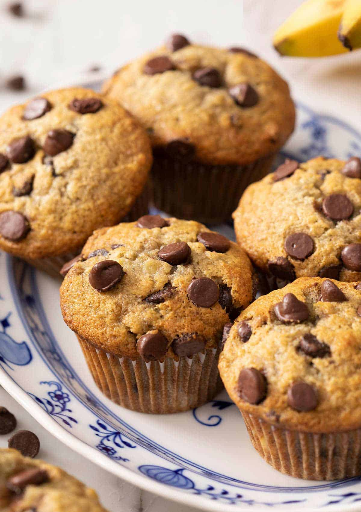

Chocolate Banana Muffins Recipe

Banana chocolate chips muffins are relatively cheap and easy to make.
I personally love to make them from time to time.
This is a recipe that is found over at
spend with pennies and authored by Holly Nilssons.
Ingredients
- 1 ½ cups flour
- 1 teaspoon baking soda
- ½ teaspoon salt
- ¾ cup sugar
- 1 cup mashed bananas
- 1 large egg
- ½ cup vegetable oil
- 1 teaspoon vanilla extract
- ½ cup semi-sweet chocolate chips
- ¼ cup milk chocolate chips
Instructions
- Preheat oven to 375°F. Line a muffin pan with paper liners.
- Combine flour, baking soda, and salt in a small bowl. Stir in chocolate chips.
- Combine sugar, bananas, egg, oil, and vanilla in a medium bowl.
- Add dry ingredients and mix just until combined.
- Pour into prepared muffin tin and bake 18-20 minutes or until a toothpick comes out clean. Do not overbake.
- Cool 5 minutes in the pan before removing and cooling on a baking rack.